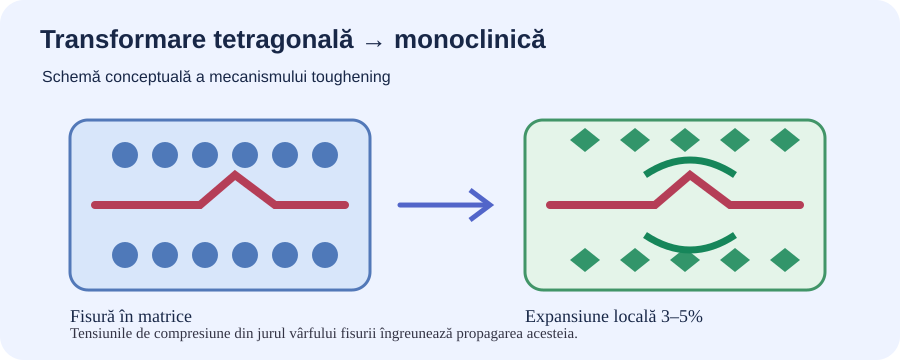
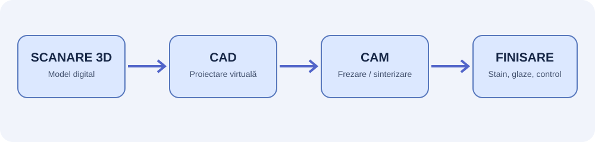

PLATFORMĂ DE ÎNVĂȚARE · PROTETICĂ DENTARĂRestaurări ceramice
Restaurări ceramice
în protetică dentară
Două capitole reunite într-un singur spațiu de studiu: coroana mixtă metalo-ceramică și coroana integral ceramică. Explicații, tabele, imagini, video și teste cu feedback.
2 capitole28 secțiuni aproximativQuiz cu feedback
CURS INTERACTIV
Explorează capitolele
Deschide o secțiune pentru a studia explicațiile, listele și tabelele.
VERIFICAREA CUNOȘTINȚELOR
Testează-te după fiecare capitol
Alege răspunsurile. Primești explicații imediat și poți relua testul.
RESURSE VIZUALE
Imagini și scheme
Ilustrații generate pentru înțelegerea structurii și a fluxurilor tehnologice.
Structura coroanelor ceramice
Comparație vizuală între o coroană cu infrastructură metalică și restaurări integral ceramice.

Zirconia – mecanismul toughening
Schema transformării tetragonal–monoclinice și a expansiunii locale de 3–5% descrise în suport.

Fluxul CAD/CAM
Scanare 3D → proiectare CAD → fabricație CAM → finisare.
Imaginile generate sunt materiale didactice orientative, nu imagini clinice și nu înlocuiesc schemele tehnice sau instrucțiunile producătorilor.
ÎNVĂȚARE AUDIO-VIZUALĂ
Materiale video recomandate
Videoclipurile sunt găzduite de platforme externe. Deschiderea lor necesită conexiune la internet.
Fabricarea coroanei din zirconia – flux CAD/CAM
Scanare, design, frezare, sinterizare, stain și glaze.
Deschide pe YouTube ↗Fluxul unui laborator dentar digital
Prezentare generală a echipamentelor și a etapelor CAD/CAM.
Deschide pe YouTube ↗▶20:14 · Zhermack
Procedura de laborator pentru coroana metalo-ceramică
De la modelul master până la stratificarea ceramicii.
Vezi materialul Zhermack ↗▶Ivoclar · tutorial
IPS e.max Press – tutorial de procesare
Wax-up, spruing, ambalare, presare și finisare.
Vezi tutorialul Ivoclar ↗Resurse externe selectate pentru completarea suportului. Conținutul, limba și disponibilitatea pot fi modificate de furnizori.
EVOLUȚIA TA
Progresul învățării
Progresul și capitolele promovate se salvează local în browserul acestui dispozitiv.